Hexcon is a pixel-based single image puzzle by Kailey the Alien. Find the single solution that draws black and white lines over the image to remove all the colours. You can pay as much or as little as you like to download it from its page on itch.io. Go do that right now. I'll wait.
Back already? Did you give it your best? Seriously, I said I would wait. Play it. Ponder it. I'm not in a rush. Take your time. This isn't going to be a review. If you've not done the homework you're not going to get very much out of this. You don't need to finish it, but you need to have given it a good shot.
Okay, so, how far did you get? You probably have some idea for blue and orange and green. Maybe for pink and yellow? You are probably thinking "wtf is all that mess on the right-hand side". Did you figure out red? I didn't. I'm still struggling. Do you have an idea what a puzzle is? Do you have an idea what a solution is? What are the constraints on pink? On yellow? Do pink and yellow change the colour of any pixels? How are you going to figure out any of these things?
Hexcon is a hidden-rules game. We have to discern the rules from examples. We are given some very powerful tools to do so, but we're also left victims to our own imaginations, and we place immense trust in the author to have created a set of rules that we can reasonably conceive of and distinguish from all other possible rules.
Our tools
Okay, so what exactly are our tools? We are given a number of things:
We are told it's about connecting blue and green pixels.
We are told there is a single unique solution.
We are advised not to upscale the image.
In-game we are told to "eliminate the colours by connecting them with black and white lines..."
"...following the hidden rules"
We are also told "each puzzle has only one solution". Emphasis mine.
We are presented with five transformations, four with green ticks, one with a red cross.
We are presented with an eleven row eight column grid of (mostly) framed square puzzles under a banner "possible".
We are presented with an eleven row seven column grid of messily framed square puzzles under a banner "not possible".
We are presented with some further coloured elements in the form of a logo and various coloured embellishments of the text and frame. We'll come back to this eventually but for now its pretty opaque.
Based on the transformations at the top of the page and the guidance that we must connect colours with black and white lines, we quickly infer that blue pixels can be connected in pairs with an orthogonal (i.e. up and down or left and right) black line, that green pixels can be connected in pairs with a diagonal black line, and that red pixels have something to do with white lines. We also glean from the single counterexample that there is something that prevents us from drawing lines over each other.
This also appears to be telling us something about what a puzzle is and what a solution is. A puzzle seems to be a hollow black square containing coloured pixels. A solution appears to be an arrangement of black and white pixels arrived at by drawing some black and white lines over the puzzle. This is reinforced by the fact the game comes with a "solution" which is in the form of an image file, renamed to remove the extension and stop you from opening it by accident. (Fun fact: this does not stop GNOME Files from showing a thumbnail. Most modern image formats have self-identifying headers. Thankfully the thumbnail is too small to see any detail.)
(For now, let's observe but set aside the distinction between "there is a single unique solution" and "each puzzle has only one solution".)
Blue, green and orange
Our most pressing concern appears to be to find the single way to resolve each of the presented "possible" puzzles, while establishing a set of rules that do not admit more than one solution for any of them, do not admit a solution for any of the "not possible" puzzles, and that are in some sense reasonable. Ideally we're hoping that our rules are as simple as possible, and that there are signs that they are indeed the rules the author is guiding us towards.
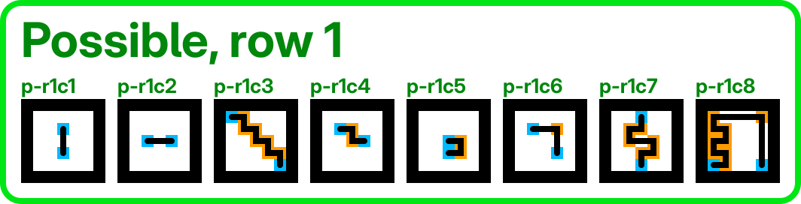
I don't think there's terribly much to say for row 1. I'll note that several of these admit different paths than shown here but that all valid paths still colour in the same pixels. I'm still going to show paths here because I think the final pixels aren't especially illuminating of the process.
It's looking like we have to draw a black line made up of alternating horizontal and vertical segments from one blue pixel to another blue pixel, with an orange pixel at each corner.
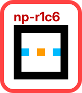
It's work noting not-possible row 1 column 6 (henceforth I'll write "np-r1c6" and similar). This tells us that not only may we turn at orange pixels, but that we must turn.
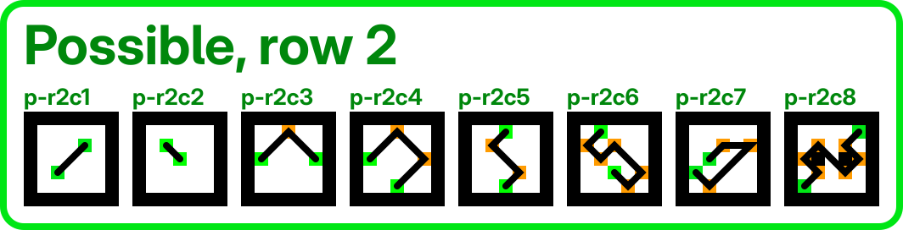
And things look similar for green. Draw diagonal lines from a green pixel to another green pixel, turning on orange pixels. Except... p-r2c7 helps us realise that we don't have to stick to diagonal lines. The rule for orange pixels seems to be that we must change direction, to one of the 7 other possible directions. But we still must arrive at our final green pixel diagonally. This seems an out of place lesson. It seems to be doing exactly the same thing as the much later p-r4c6. This makes me wonder if I'm missing something.
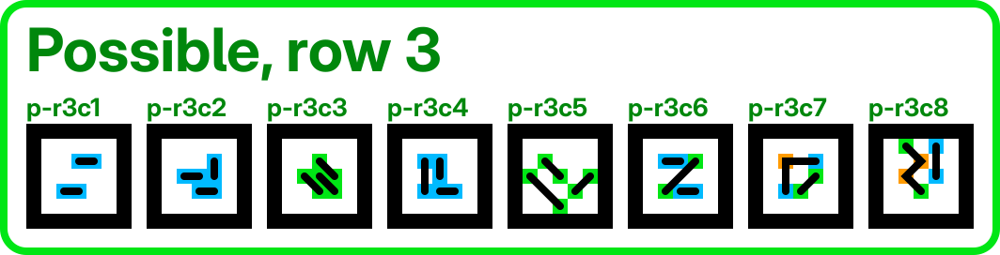
We get some puzzles that involve multiple lines. But this isn't too daunting. We already had an example of a multiple line puzzle in the five transformations at the top of the page. However, we do have something to ponder when we compare column 3 here with not-possible row 1 column 3...
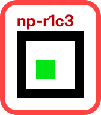
Quite what's not allowed here? Drawing the first diagonal line? The second? Drawing a length 2 diagonal line? We will find examples where we seem to have to do all three of these things. I'm not really sure what to make of this. It's a minor conundrum.
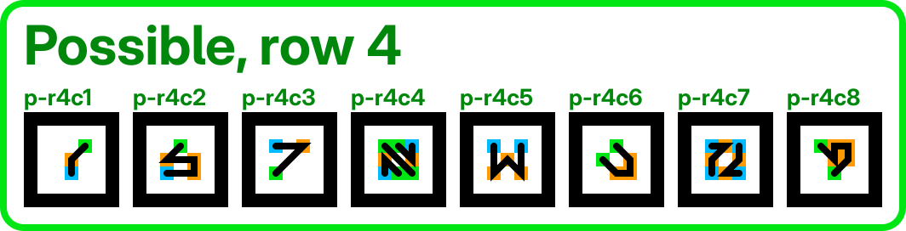
Row 4 has us revise our expectation that a line must start and end blue or start and end green. As long as we arrive with the correct orientation, it seems we are fine. Nothing else new seems to be happening here.
Pink
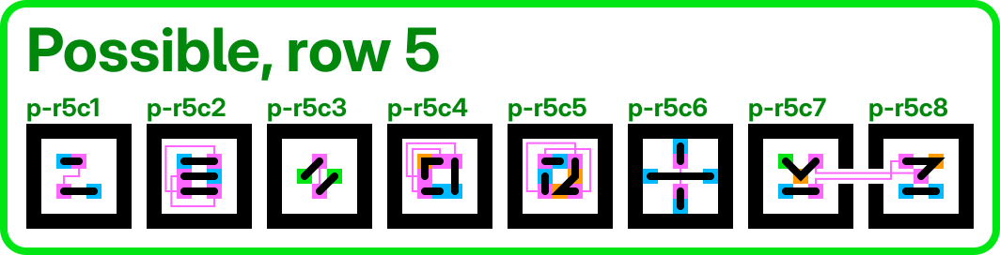
Row 5 introduces pink pixels, and our headaches begin. It looks like pink pixels generally appear in pairs and do seem to participate in the path, since they always seem to be in line with some other pixel. After a while we come up with a hypothesis: they act as some kind of portal, and preserve the direction of the line. If the line enters the left side of one pink it must exit the right side of another pink. We might simply assume that we can go from any pink to any other pink in the same puzzle. However...
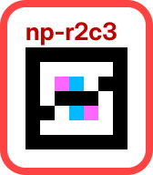
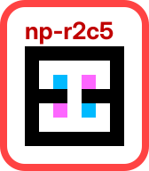
Np-r2c3 causes us some trouble. We have to come up with some reason why we can't draw a line that teleports between this pair of pink pixels. The conspicuous element of this puzzle is that black pixels partition it in two. So... maybe we actually need to draw a line between the two? Or a path? Or maybe they just need to have any white path between them? And then np-r2c5 makes things worse, because there clearly is a path between the pink portals. I think from this we have to understand that we draw as a pixel-by-pixel process, and the process of starting a line from either blue horizontally into the pink immediately cuts it off from the other half of the board. This is slightly uncomfortable, since there's some sense where we can fail to draw a line if we don't manage to successfully end it on a blue or green pixel facing in the right direction, but the hypothetical line we're drawing must be considered throughout the process, because it might block our way.
Until this point, our rules had been reversible. We didn't really have a concept of time. It didn't matter which end we "start" or "finish" at, nor the order we drew the lines. But it feels like the pink pixels are forcing us to accept that these things matter. Sometimes I'll mark these diagrams with a circle for the start of a line and a square for the end, but mostly only for cases where it might be confusing.
The other thing row 5 does is start breaking the frames. We cannot solve p-r5c7 and p-r5c8 in isolation. But this is terrifying! Our whole understanding of a "puzzle" depends on it being discrete. What does the "not possible" page tell us if we do not know where one puzzle ends and another begins? We are still not entirely sure of our rules for pink pixels, but suddenly we have to worry about whether p-r6c8, p-r8c7 and p-r11c7 have any bearing on this puzzle. Maybe we didn't understand how the pink pixels must be connected. Is there a range limit? Can they follow and twisty path as long as it's made of white pixels? Can they pass through other coloured pixels as long as they're not black?
Yellow
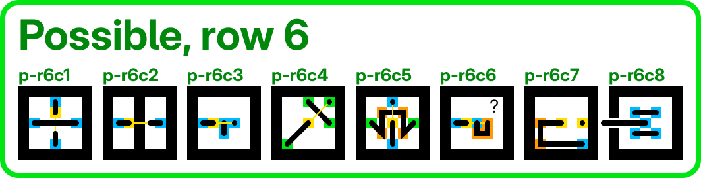
Row 6 brings yellow pixels. Especially p-r6c2 shows that they have some way to make connections between isolated parts of the puzzle. But unlike pink pixels, they don't come in pairs. They seem to act like trampolines, bouncing you over a pixel, leaving the jumped pixel unmodified. The row makes sense with this understanding, but we may have to revisit these as we fully untangle the yellow pixel. For now I'll observe one thing: a major simplifying factor we're relying on to understand how colours work is the promise that the rules make to us, that we will connect colours with black and white lines. But if we accept this trampoline concept, some of the lines we're drawing do not connect coloured pixels. The line that lands after a trampoline might well start in colourless space. It might not even be a line! In p-r6c7 we bounce off two trampolines in a row. Can we really call a single pixel drawn on the second trampoline a "line" that "connects" colours? Perhaps we're not entirely right on how this rule works.
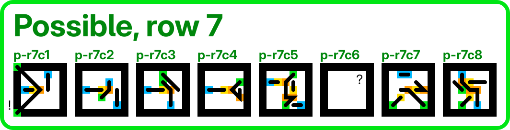
Row 7 is getting weird. P-r7c1 has green pixels in the border. At the same time we have a blue pixel with no other coloured pixel in its row or column. How do we ever get there? My working hypothesis is that jumping over an orange pixel still changes your direction, but it doesn't affect your jump trajectory. This seems to fit the puzzles in this row. But before we move on, we have to look at these green pixels in the corner.
Can we, or can we not, draw a line through a diagonal gap like this? This puzzle seems to strongly indicate that it's possible. But look back at np-r1c3 and np-r2c4.
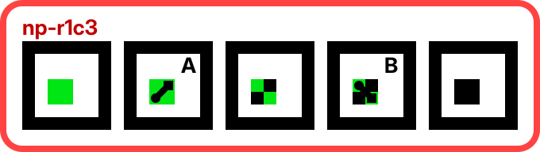
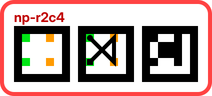
Which step in np-r1c3 above is not allowed? A, B or both? Are we not allowed to draw a diagonal line between green pixels? Or not allowed to draw one between black pixels? Or does the puzzle "remember" where our lines went and disallow crossing an old line? That feels unsatisfying. We know that solutions are composed of pixels. It feels like hypothesising unevidenced subatomic particles if we have to care about old lines we drew but are allowed to treat identical looking configurations as porous. P-r7c1 asks us to believe that step B is legal, so it must be step A that is illegal. But np-r2c4 doesn't do this at all. To ensure that it is "not possible" we either need to say that we can't draw lines through a diagonal black gap, or that there's more to the world than just pixels. I can set this aside for now but it's troubling. There's something I'm not seeing.
And before we move on from row 7, what's with p-r7c6? It's just empty?? I mean, I guess it's already solved. But why is it here?
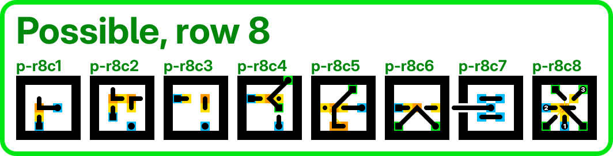
In row 8 we get a bit more comfortable jumping over orange pixels and using the delayed turn. We have another puzzle that extends into the frame, but not in a way that introduces awkward new questions. We have p-r8c8, probably the hardest individual puzzle that I actually think I've solved. Some more inter-puzzle shennanigans too. But otherwise no new questions raised.
Pink returns
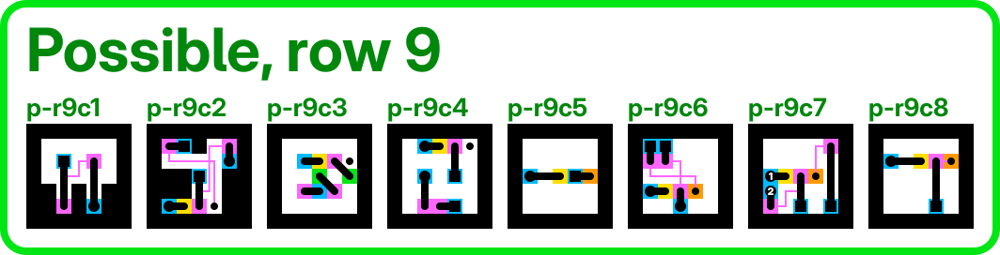
We start row 9 with one of those easy puzzles that make you doubt you understood the rules correctly. I am fairly sure this puzzle reinforces that we do not draw any kind of line connecting the pink pixels to each other, because if we did it would paint us into a corner.
We now have a strange puzzle. We have an odd number of pinks. The only conclusion I can draw is that just as trampolining over an orange pixel gives you the effect of the orange, delayed, without consuming the orange, so too trampolining over a pink allows you to teleport without using up the pink. However, this opens up a whole new can of worms. Do you teleport in mid-air? Do you still hit the ground and teleport from where you land, like the orange works? The latter seems to be the case. If you teleported in mid-air then surely you would be unable to colour-in the target pink pixel, but that's clearly necessary in this puzzle. This leads me to reword the behaviour of yellow. I think it means you travel over a pixel, do not colour it, and apply its effects in the following cell, as if that cell had been the jumped cell's colour in addition to any colour it already has.
Except... do you recall I was troubled by p-r6c6? There we jumped over a blue cell and landed on an orange cell. But if we apply this rule consistently, surely we should have treated the landing cell as orange and blue, turning and coming to a halt. But this would have left the puzzle unsolvable. I want to come up with a simple rule, but I fear we need to make special-cases: you can jump over colourless, blue or green cells with no effect, but if you jump over pink or orange cells their effect is applied upon landing.
God help us if we have to figure out what happens when you jump over a yellow cell.
I cannot help but wish there was slightly more evidence to reinforce what colour of lines are left behind by all these pixels. We have direct evidence only for blue, green and red, and what we have is scant.
The rest of the row seems fine and doesn't raise any new troubling questions.
Red and beyond
And here's where I run out of answers. It's not that I'm out of ideas, but I'm finding it very hard to reinforce or contradict them. My best hypothesis for red is that it lets you draw an orthogonal white line, deleting one pixel in its line of sight. But this causes a lot of trouble.
Perhaps now is the time to talk about all that other stuff. Clearly there's more to Hexcon than the grid of little square puzzles. The whole image is drawn in the same colours. (Actually, side point: there's two shades of green. Puzzles p-r2c2 through p-r2c6 use a brighter shade of green. I think this is just a mistake.) The logo and the "possible" heading are clearly composed of pixels that are supposed to do something. There are three lonely blue pixels trapped in the panel in the top right, hemmed in by a thick black border. And the "not possible" side of the page is an utter mess towards the bottom. What do we think this is all about?
I think the only reasonable conclusion is that we can solve the whole picture as one puzzle. That may lead us to ponder how that's going to happen. Clearly the "possible" side solves itself. Or so we have been led to believe. But is the "not possible" side just a lie? That seems very unsporting! I think we have to assume that each "not possible" puzzle is not possible in isolation, but can be solved as a whole. (But then... shouldn't the "possible" puzzles be solvable in isolation? We already concluded that some need to be solved in pairs.)
We know that red helps us delete things. We have that one example at the top where a red and a blue are deleted. And we know we're supposed to draw "black and white" lines and we've only ever drawn black lines so far. So presumably we delete things by drawing white lines. But from where and to where?
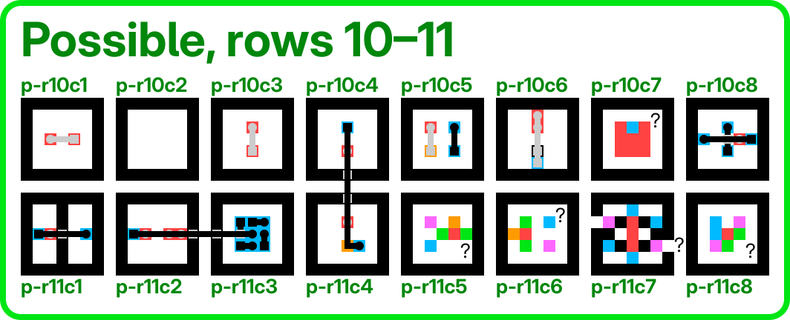
P-r10c1 and p-r10c3 seem to suggest that red pixels can delete each other. But np-r2c2 gives us a large even number of red pixels and tells us the puzzle isn't possible. Why can't they just delete each other? Np-r2c6 gives us a three by three square of red pixels, why can't we just use them to delete its frame? We seem to have to leave p-r5c7 and p-r4c8 with open frames, so I don't think there's a requirement that a puzzle has to be completed with a closed frame. (It wouldn't be an utterly wild idea, but I couldn't figure out a way to do it for those puzzles and even if it were the case I'm not sure it would do enough to solve any big problems.)
It's worth considering what else red might do. A not entirely ridculous idea would be for it to mimic other colours of our choice. It would be a simple rule. But it doesn't seem to do the one thing we need red to do, which is to delete things.
If you set aside the problems of it being able to solve "not possible" puzzles, our hypothesised "draw a white line until you hit a cell" idea also gives us trouble by providing non-unique solutions. Several of these puzzles contain just a couple of red pixels. What's to stop us from colliding them in any direction with the frame? Either we're wrong about the hypothesis, or we need every single one of these to solve other parts of the puzzle. But they can barely break out of their own puzzle, never mind reach into another to interfere with it. I think I still don't have the idea quite right.
You can see my solutions petering out here. I don't feel confident about my red hypothesis. And even if it does have the general idea, how do the subtleties work? Can red delete any other colour? Or does it change direction at an orange, for example? Can it choose? Can you draw a black line into a red cell, and if so what happens? Does it retroactively turn the whole line white? Does it have to arrive orthogonally? Can red travel through a pink portal and delete something on the other side?
Overall, I think I've gotten about as far as I can on my own. There are some rot13 hints provided with the game which I've avoided until now, but I think I'm going to have to look at them. They are pretty short, so it's possible I'll be just as stuck after reading them.
I'm interested to hear from others who have attempted it. Did you get further? Have you read the hints yet? I'm on Mastodon and Bluesky if you want to get in touch.